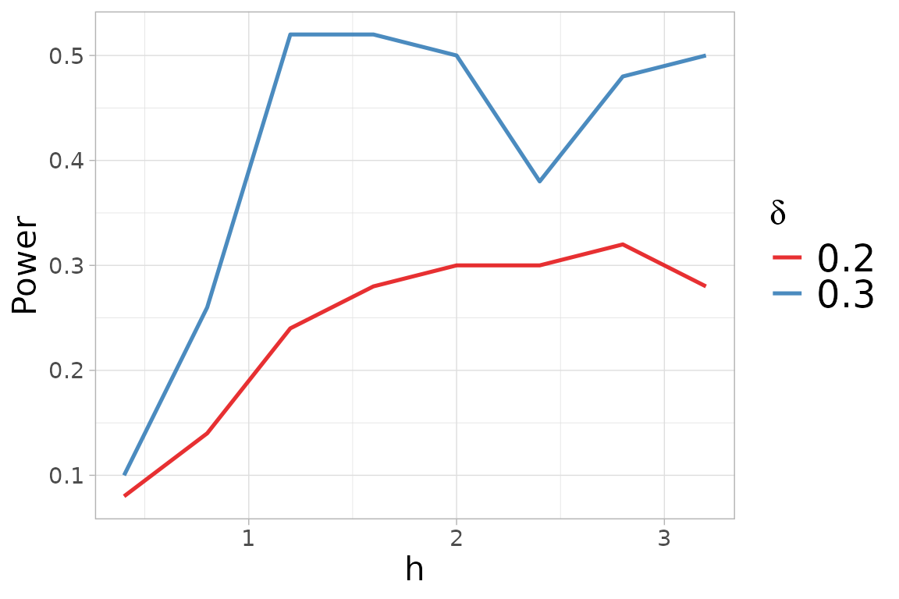

Non-parametric Two-sample test
Giovanni Saraceno
Source:vignettes/TwoSample_test.Rmd
TwoSample_test.RmdNon-parametric two-sample test
The two-sample test can be additionally performed by providing the
two sample to be compared as x and y. We
generate the sample \(y = (y_1,
\ldots,y_n)\) from a skew-normal distribution \(SN_d(0,I_d, \lambda)\), where \(d=4\), \(n=200\) and \(\lambda= (0.5,\ldots,0.5)\).
## Warning in rgl.init(initValue, onlyNULL): RGL: unable to open X11 display## Warning: 'rgl.init' failed, running with 'rgl.useNULL = TRUE'.
n <- 200
d <- 4
skewness_y <- 0.5
set.seed(2468)
x_2 <- rmvnorm(n, mean = rep(0,d))
y_2 <- rmsn(n=n, xi=0, Omega = diag(d), alpha=rep(skewness_y,d))For the two-sample case, the summary function provides
the results from the test and the descriptive statistics per variable
and per group, as similarly described for the \(k\)-sample test. Additionally, it generates
the qq-plots comparing the quantiles of the two groups for each
variable.
summary_two <- summary(two_test)## Registered S3 methods overwritten by 'ggpp':
## method from
## heightDetails.titleGrob ggplot2
## widthDetails.titleGrob ggplot2
##
## Kernel-based quadratic distance two-sample test
## Test_Statistic Critical_Value Reject_H0
## 1 5.497909e-05 9.957034e-06 TRUE
summary_two$summary_tables## [[1]]
## Group 1 Group 2 Overall
## mean 0.021762263 0.3799990 0.2008806
## sd 1.014655344 0.9498167 0.9977884
## median -0.005110155 0.3833061 0.2125618
## IQR 1.471877262 1.1310211 1.3666010
## min -2.675477796 -2.2219439 -2.6754778
## max 2.300153117 3.1690406 3.1690406
##
## [[2]]
## Group 1 Group 2 Overall
## mean -0.03347117 0.2216529 0.09409085
## sd 1.06408749 1.0304067 1.05383755
## median 0.02476594 0.1717768 0.09272994
## IQR 1.52458343 1.3739349 1.45668193
## min -3.22222061 -2.6162342 -3.22222061
## max 2.96751758 2.3300745 2.96751758
##
## [[3]]
## Group 1 Group 2 Overall
## mean -0.06473408 0.3312699 0.1332679
## sd 0.93818786 0.9868499 0.9818422
## median -0.07044427 0.4006745 0.1382735
## IQR 1.37135831 1.2185714 1.3854150
## min -2.86000669 -3.0246026 -3.0246026
## max 2.56476485 2.7590501 2.7590501
##
## [[4]]
## Group 1 Group 2 Overall
## mean -0.1658894 0.2065222 0.02031639
## sd 1.0175325 0.9718613 1.01104987
## median -0.2371959 0.1427746 0.04889195
## IQR 1.3802070 1.2320445 1.32957715
## min -2.5899601 -2.0159679 -2.58996007
## max 2.7066430 2.6637589 2.70664302The figure automatically generated by the summary
function on the result of the two-sample test displays the qq-plots
between the two samples with a table of the standard descriptive
statistics for each variable, computed per group and overall.
Select h
If a value of \(h\) is not provided,
the function automatically perform the function
select_h.
# two_test_h <- kb.test(x=x_2, y=y_2)For a more accurate search of the tuning parameter, the function
select_h can be used. This function needs the input
x and y as the function kb.test
for the two-sample problem.
h_test2$h_selThe figure generated by the select_h function on the
result of the selection of \(h\)
algorithm on the two-sample data set displays the obtained power versus
the considered \(h\), for the
alternatives \(\delta\).